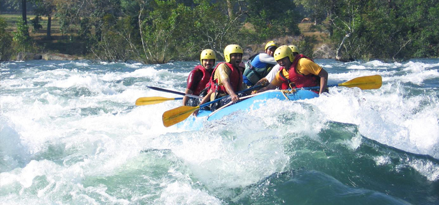
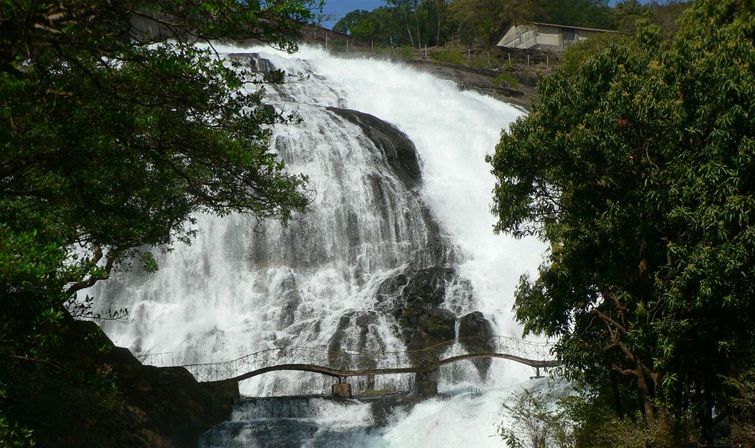
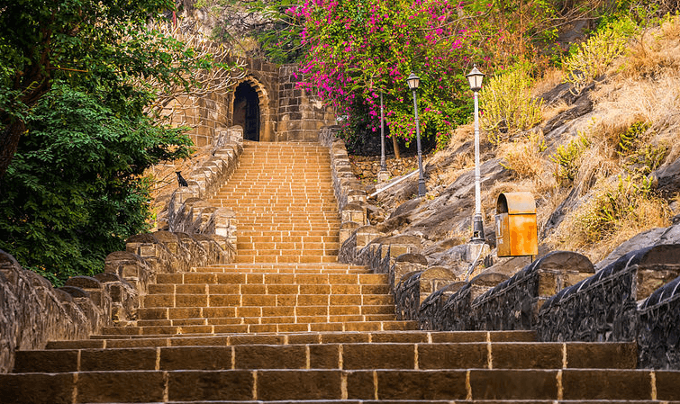
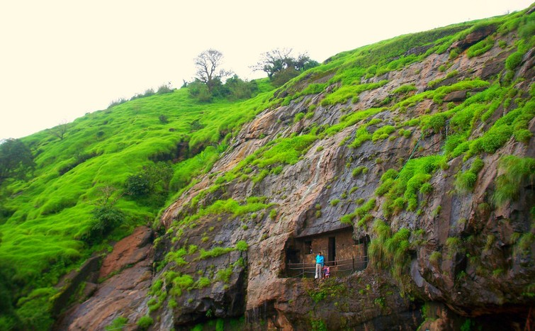
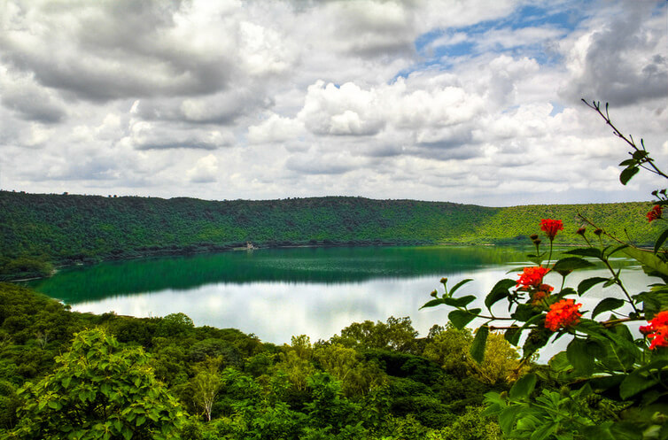
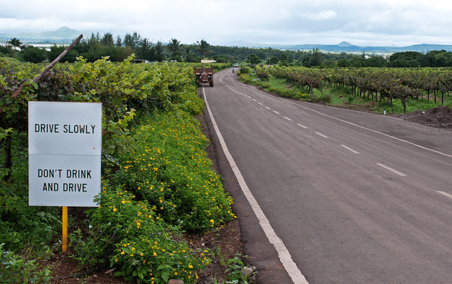
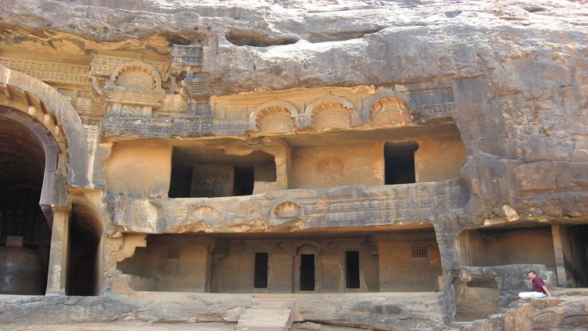
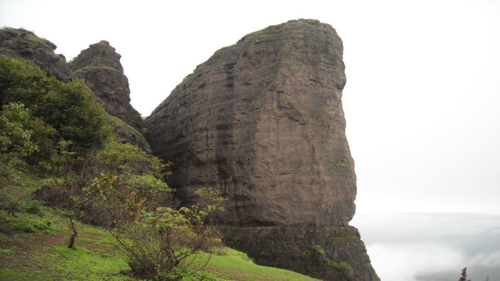

Kundalika River – A mecca for adventure junkies
Originating from the tiny hamlet of Bhira, about 160 km. from Mumbai, ‘Kundalika’ is a small yet pristine river that winds its way through thick forests and rice fields nestled amidst the beautiful Sahayadri Ranges. On its way to the Arabian Sea, where it eventually ends, it is fed by the overflowing waters of various dams and hydroelectric projects of the region that make it ideal for numerous adventure sports, attracting hundreds of adventure freaks from the nearby towns especially over weekends. Needless to say, the river is a heaven for river rafters as the gushing waters released from the dams create perfect rapids to enjoy this adventure sport to the fullest; as you brave through the strong currents with your rafts toppling and turning over occasionally, you are sure to get that enthralling feel of adrenaline rushing through your veins.
What further adds to the charm of the whole rafting experience at Kundalika is the fun of camping on the shores of the river, with thick jungles around and sounds of birds and reptiles echoing in the air; just put the campfire on, cook a delicious bar-be-cue meal and spend a night partying with your friends under the moonlit sky and rest assured, you are certainly going to cherish these fun-filled memories of your rafting cum camping experience for the lifetime.

Bhandardara – a treasure trove of scenic beauty
A quaint holiday resort village sitting on the shores of the Pravara River in the Western Ghats, ‘Bhandardara’ is truly one of the best kept secrets of Maharashtra. Bestowed with a wealth of cascading waterfalls, pristine lakes and splendid hills, the place, though one of the less explored destinations in the Maratha state, makes for a perfect nature retreat for people looking out for a peaceful holiday amidst tranquillity, away from the maddening crowds of the other more popular and touristy places in Maharashtra. Prime attraction of this little hill town is its serene ‘Arthur Lake’ that cradles amidst the verdant forests of Sahayadris; pack a basket of snacks and head for a nice picnic with friends and family on its pristine shores soaking your souls in splendid scenic vistas around. For a closer rendezvous with nature, plan a visit to the beautiful ‘Umbrella Falls’ that provide for an entrancing spectacle of shimmering waters cascading down volubly through a series of naturally placed rocks that give the illusion of an umbrella; with captivating vistas of hills all around covered in veils of mist and multiple hues of green adding that blissful charm to the whole scenery, you are sure to bring out that photographer hidden within you.

Shivneri Fort
Famed for being the birthplace of Chhatrapati Shivaji Bhosale, the founder of Maratha Kingdom, ‘Shivneri Fort’ located in Pune district of Maharashtra, is another of the less frequented travel places in the state that can be well explored over a weekend. A fort with a great historical significance, it stands perched atop the 300 metres high Shivneri Hill amidst the scenic Sahayadri Ranges and boasts of an excellent architecture with unique triangular design and numerous attractions to see and admire. Maintained by the Archaeological Survey of India, it is best visited on a trekking excursion from the small village of Junnar that lies 2 km. from the base of the fort. Starting from the base, one needs to climb a flight of hundreds of stone steps that traverse through 7 massive arched gateways. As you ascend these steps, look out for ‘Sri Shivai Devi Temple’, after whom Shivaji was named and the ‘Ganga Jamuna’ water tanks, which in earlier times were used for the supply of drinking water to the residents of the fort. The most interesting attraction at the fort is the ‘Shivkunj’, a recently restored room where Shivaji was born; a small cradle and statues of Shivaji with his mother, Jijabai here give you a small glimpse of the great Maratha warrior’s childhood.

Karla & Bhaja Caves
For all those who love going off the beaten track, exploring the destinations that do not fall on a conventional travel map, the ‘Karla and Bhaja Caves’ located near the famous hill station of Lonavala, make for a perfect sightseeing destination, the upcoming weekend. Dating from around the 2nd century BC, these caves boast of an excellent Buddhist rock-cut cave architecture in India. Housing massive prayer halls (chaityagraha) and several resting rooms (vihara) for monks, complete with outstanding sculptures of Buddha and Bodhisattvas, a fine collection of stupas and brilliant carvings depicting scenes from daily lives of the then men & women on the inner walls, facades and pillars, these caves are no less in comparison with the more celebrated Ajanta and Ellora caves.
What further accentuates the charm of these beautiful caves is the lush green surroundings and couple of enchanting waterfalls, where one can take a refreshing dip, deeply rejuvenating all his senses. Needless to say, these caves are a photographer’s delight offering them endless opportunities to click a bundle of gorgeous pictures reflecting exceptional artistry and craftsmanship of the sculptors from the bygone times.

Lonar
Located in the Vidarbha region, Lonar is a small town best known for its mysterious ‘Lonar Lake’, also called as ‘Lonar Crater’. Believed to have been created by a meteor impact during the Ice Age some 50000 years ago, the lake boasts of a unique ecosystem which is a big draw for scientists, ecologists and off-course numerous curious travellers who throng here to uncover its hidden mysteries. One of the most unexplored tourist destinations in Maharashtra, the lake offers an enchanting spectacle with its shimmering emerald green waters cradling amidst thick jungle spreads dotted with a variety of trees including date-palms, tamarind and babul. Owing to dense jungles, the area around the lake abounds in an exotic wildlife and has much to offer to animal and bird lovers; watch out for langurs, chinkaras, barking deer, peafowls, egrets and many migratory birds that flock here in winters.

Sula Vineyards
Located in the Nasik district of Maharashtra, ‘Sula Vineyards’ are famed for starting the first ever wineries in India. Today, these vineyards cater to more than 50 wineries and are spread over 1800 acres of land across Nashik and parts of Karnataka. One of the most unconventional tourist spots in the state, you can easily plan a day trip here and spend a leisurely time in the lap of nature. With a variety of grapes hanging on the vines and a marvellous extravaganza of flowering plants adding that touch of colour to the whole vine spread, you are sure to be left overwhelmed by the spectacular scenery in front of your eyes.

The historic relics of Karla and Bhaja Caves
Whenever someone mentions the caves of Maharashtra, the first instinct is to think of Ajanta, Ellora and Elephanta, as important as these might be, there are numerous other caves that served as refuge to the Buddhists from the historic era, that can be found around the state.
Located near the popular tourist town of Lonavala, the caves are just off the main street and are a delight to explore.
The carvings and construction are believed to have been done somewhere around 1st or 2nd Century BC by the Hinayana sect of Buddhism and look so alive that they appear to be talking from the rocks and wooden beams! In fact, the Karla Caves are the largest chaityas (temples) in India!

The Craggy Outcrop of Duke’s Nose
One of the most preferred unexplored places in Maharashtra for both avid and inexperienced trekkers, Duke’s nose is located very close to the popular hill stations of Lonavala and Khandala.
The peak, also called as Naagphani, rises to a height of approximately 1000ft. and is a haven for rappelling and rock climbing lovers.
The funny story associated with its name is that, it resembles the nose of Duke of Wellington which was believed to be big and humongous!